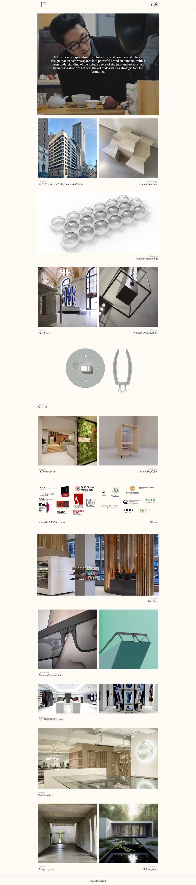
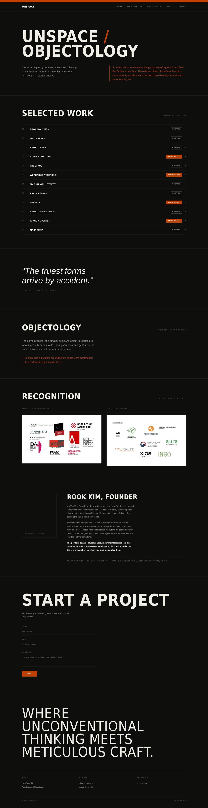
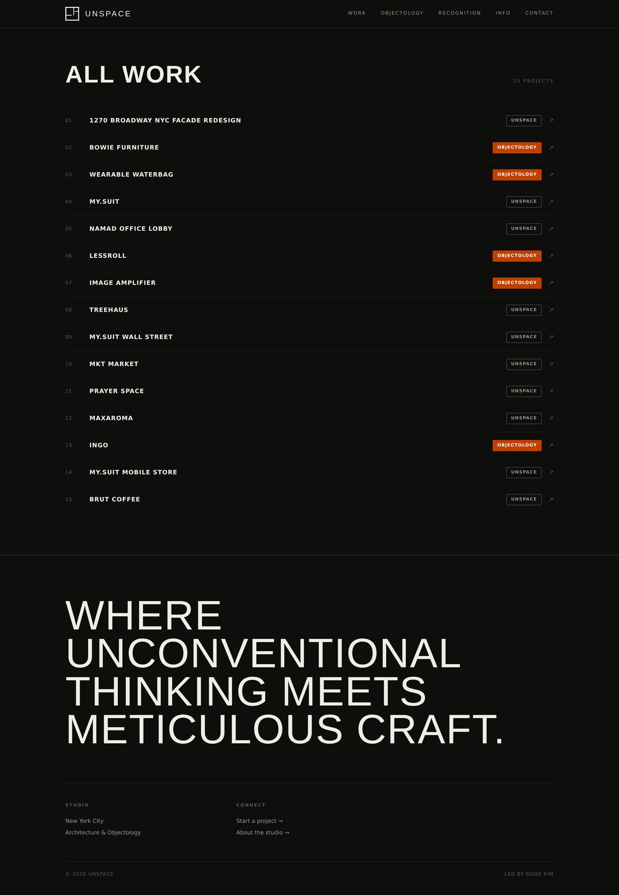
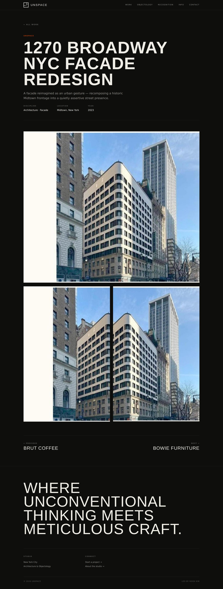
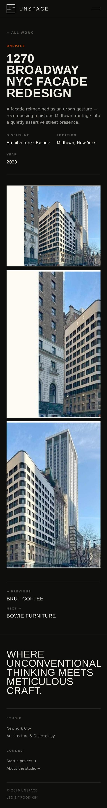
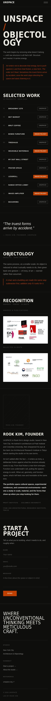
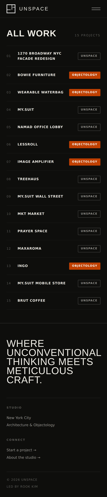
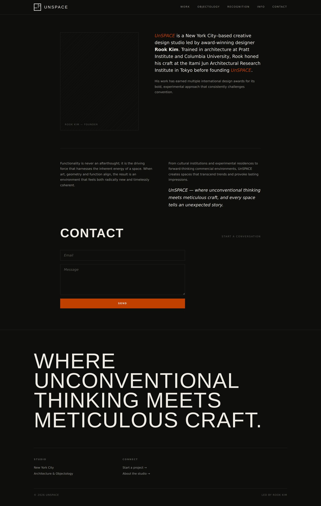
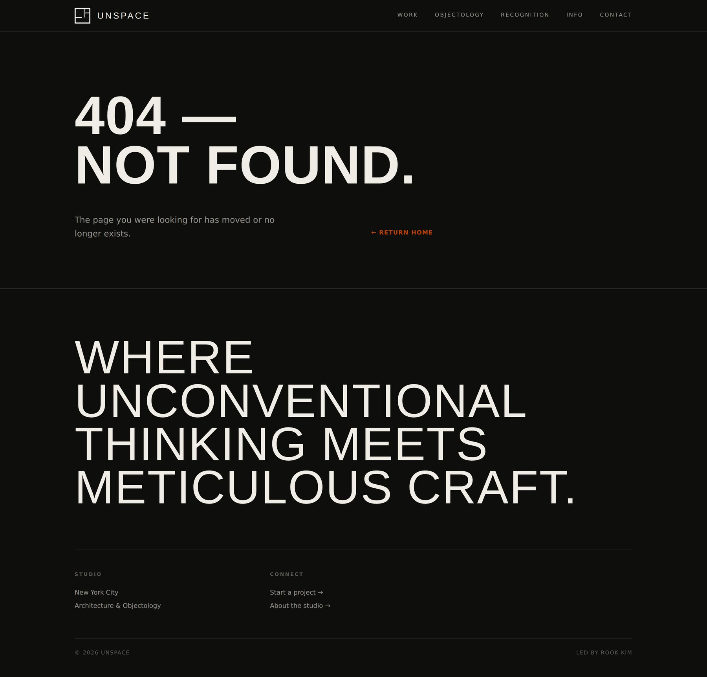

Split the practice, then say so
The alternative was one undifferentiated feed. Naming the two halves turns apparent inconsistency into a stated position — and gives a prospective client a way to know which half they're hiring.
UnSPACE is Rook Kim's New York studio, working across architecture and object design. The old site showed the work and explained none of it.
The studio had fifteen projects, international awards and a client list including cultural institutions. The website was a scrolling grid of photographs with italic captions. No navigation, no project pages, no statement of what the practice does — and no way for a visitor to tell a building apart from a chair.
A visitor could scroll the entire site without learning what UnSPACE does. Architecture and object design sat side by side with nothing distinguishing them, so the range read as inconsistency rather than as a practice working at two scales.
Nothing had a URL. A project couldn't be linked, sent to a client, or found in search. For a studio whose work had been published and awarded, that's a real cost.
The practice was split in two and named: UnSPACE for architecture, Objectology for objects. Every project now carries one tag. One studio, two scales, the same process — stated rather than left for the visitor to infer.
The work became an index rather than a gallery: a numbered list with tags that scans in seconds, stays fast as the archive grows, and gives every project a real page.
The alternative was one undifferentiated feed. Naming the two halves turns apparent inconsistency into a stated position — and gives a prospective client a way to know which half they're hiring.
Image grids look good with six projects and collapse at fifteen. A typographic index scans faster, loads faster, and puts the project name first — which is what someone who already knows the work is looking for.
A page builder would have shipped sooner. It would also have left the studio paying licence fees to edit their own site, with markup they can't move. The theme is hand-built and belongs to them.








